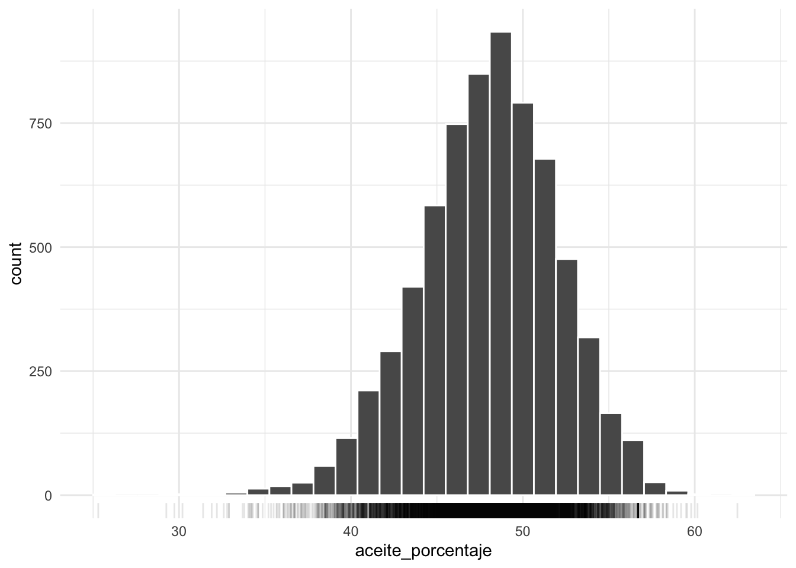
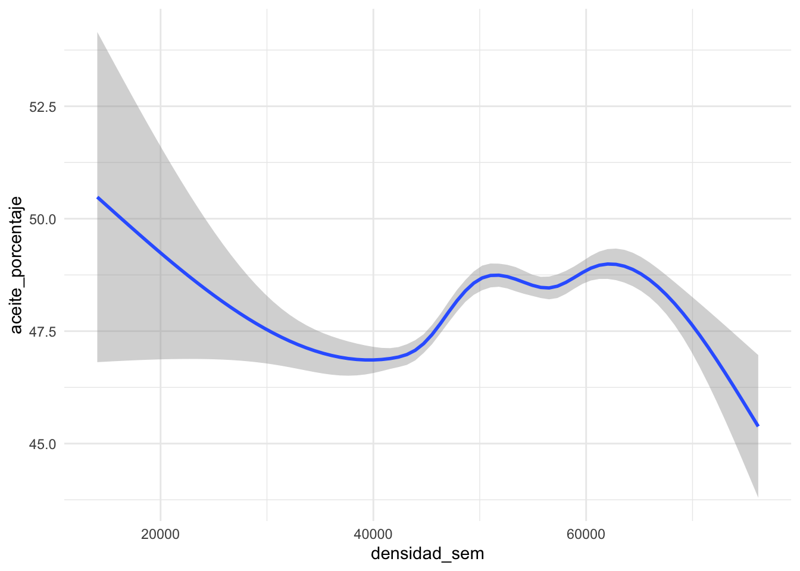
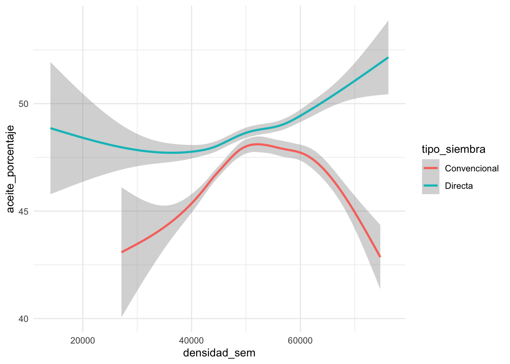
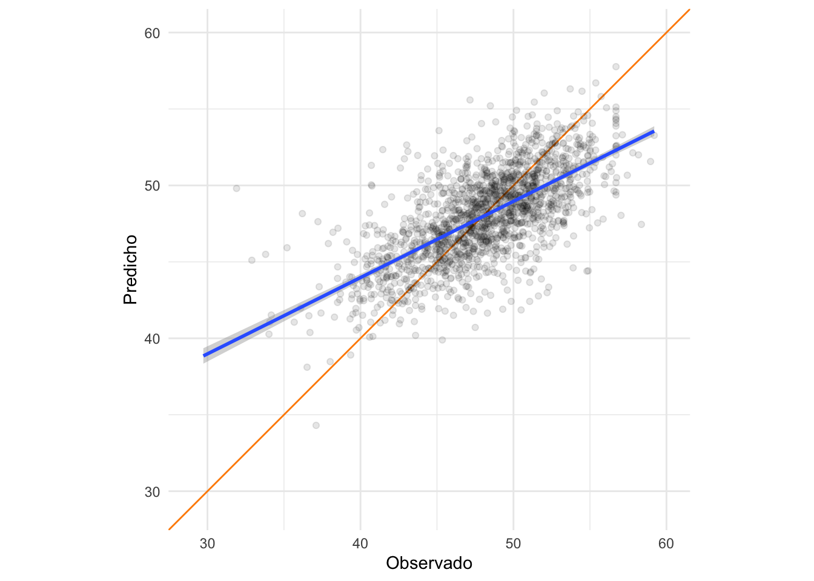

Datos de cultivos
Vamos a trabajar con datos de rendimiento de cultivos que incluyen
información sobre la floración, la altura del cultivo, la campaña, el
tipo de ensayo, la distacia entre surcos entre otras cosas. Con esta
información intentaremos generar un modelo que nos permita predecir la
variable aceite_porcentaje.
cultivos <- read_csv("https://raw.githubusercontent.com/paocorrales/intro-tidymodels-agro/main/datos/cultivos.csv")
## Rows: 6856 Columns: 13
## ── Column specification ────────────────────────────────────────────────────────
## Delimiter: ","
## chr (7): campania, tipo_ensayo, epoca, tipo_siembra, testigo, visible, cultivar
## dbl (6): floracion_dias, altura_cm, densidad_sem, rendimiento, aceite_porcen...
##
## ℹ Use `spec()` to retrieve the full column specification for this data.
## ℹ Specify the column types or set `show_col_types = FALSE` to quiet this message.
La variable aceite_porcentaje tiene la siguiente
distribucuón:
cultivos %>%
ggplot(aes(aceite_porcentaje)) +
geom_histogram(color = "white") +
geom_rug(alpha = 0.1)

Preparando los datos
Esta base de datos tiene en total 6856 registros de distintos ensayos
de cultivos. Vamos a dividir los datos en 2 subsets de entrenamiento
(cultivos_train) y testeo (cultivos_test). En
primer lugar la función initial_split() divide los datos en
2 utilizando el argumento prop para definir cuantos datos
iran a cada subset. En ese caso usamos por defecto 3/4, es
decir, el 75% de los datos iran al entrenamiento y el 25% quedará para
el testeo. Decidir este porcentaje es un problea en si mismo!
set.seed(91)
cultivos_split <- initial_split(cultivos,
prop = 3/4)
cultivos_split
## <Training/Testing/Total>
## <5142/1714/6856>
En segundo lugar, con training() y
testing() extraemos los 2 subsets de datos a partir del
objeto que generamos recién.
cultivos_train <- training(cultivos_split)
cultivos_test <- testing(cultivos_split)
Veamos ahora que pinta tiene nuestra variable de interes en relación
con otras, por ejemplo densidad_sem. Inicialmente no parece
haber una relación muy clara.
cultivos_train %>%
ggplot(aes(densidad_sem, aceite_porcentaje)) +
geom_smooth()

Sin embargo si incluimos tipo_siempra como tercera
variable, vemos que esta nueva variable podría llegar a explicar, en
parte el comportamiento de aceite_porcentaje.
cultivos_train %>%
ggplot(aes(densidad_sem, aceite_porcentaje)) +
geom_smooth(aes(color = tipo_siembra))

Comencemos ahora con el preprocesamiento de los datos. Para esto
crearemos una receta, es decir una serie de pasos que realicen
las transformaciones necesaria para dejar los datos listos para el
modelado. A diferencia de otras implementaciones con tidymodel separamos
completamente el preprocesamiento del modelado. De esta manera
modularizamos el proceso y podemos utilizar la misma receta
para aplicar modelos distintos.
Crearemos la receta con los datos de entrenamiento pero luego
podremos aplicar estos pasos también a los datos de testeo. Iniciamos la
receta con la función recipe() indicando la formula, en
este caso queremos evaluar la relación de aceite_porcentaje
en función de todas las otras variables.
receta_aceite <-
recipe(aceite_porcentaje ~ ., data = cultivos_train)
El siguiente paso es trabajar con predictores categóricos, para esto
sumamos un paso a la receta step_dummy() que convierte las
variables nominales (caracteres o factores) en variables numéricas
binarias. En este caso aplicamos el paso a todos os predictores
nominales. Aquí vemos además que la receta es compatible con el uso de
la %>% por lo que podemos ir sumando los paso uno detrás
del otro.
receta_aceite <-
recipe(aceite_porcentaje ~ ., data = cultivos_train) %>%
step_dummy(all_nominal_predictors())
##
## ── Recipe ──────────────────────────────────────────────────────────────────────
##
## ── Inputs
## Number of variables by role
## outcome: 1
## predictor: 12
##
## ── Operations
## • Dummy variables from: all_nominal_predictors()
En el siguiente paso step_zv() remueve las variables que
contienen solo 1 valor único (si las hubiera), es decir con varianza
cero.
receta_aceite <-
recipe(aceite_porcentaje ~ ., data = cultivos_train) %>%
step_dummy(all_factor_predictors()) %>%
step_zv(all_predictors())
Cómo vimos que hay alguna relación entre densidad_sem y
tipo_siembra vamos a sumar un nuevo paso que tenga en
cuenta esa interacción.
receta_aceite <-
recipe(aceite_porcentaje ~ ., data = cultivos_train) %>%
step_dummy(all_factor_predictors()) %>%
step_zv(all_predictors()) %>%
step_interact(~ starts_with("densidad_sem"):starts_with("tipo_siembra"))
Finalmente aplicamos step_normalize() para normalizar
todos los predictores.
receta_aceite <-
recipe(aceite_porcentaje ~ ., data = cultivos_train) %>%
step_dummy(all_factor_predictors()) %>%
step_zv(all_predictors()) %>%
step_interact(~ starts_with("densidad_sem"):starts_with("tipo_siembra")) %>%
step_normalize(all_numeric_predictors())
Y ahora si, tenemos nuestra receta.
##
## ── Recipe ──────────────────────────────────────────────────────────────────────
##
## ── Inputs
## Number of variables by role
## outcome: 1
## predictor: 12
##
## ── Operations
## • Dummy variables from: all_factor_predictors()
## • Zero variance filter on: all_predictors()
## • Interactions with: starts_with("densidad_sem"):starts_with("tipo_siembra")
## • Centering and scaling for: all_numeric_predictors()
Esta receta además, define claramente las transformaciones que
hacemos en los datos por lo que es reproducible.
Podríamos encadenar la función prep() para
preparar los datos usando la receta pero en nuestro caso
ejecutaremos todos los pasos necesarios en un workflow.
Definiendo el modelo
El siguiente paso es definir el modelo a aplicar. Nuevamente usamos
tidymodels que tienen funciones que funcionan como interfaz con
implementaciones en distintos paquetes. Podés revisar la lista de
modelos disponibles acá.
En nuestro caso vamos a arrancar con el modelo linea usando la función
linear_reg().
modelo_lineal <-
linear_reg()
Por defecto esta función usa lm del paquete
stats de R base pedro podríamos usar muchos otros
engines, es decir, otras implementaciones al modelo lineal como
glm y glment. Para setear un engine usamos
set_engine():
modelo_lineal <-
linear_reg() %>%
set_engine("lm")
En algunos casos necesitaremos tener paquetes específicos instalados,
por ejemplo lme requiere un extension del paquete
parsnip.
## Linear Regression Model Specification (regression)
##
## Computational engine: lm
Ya tenemos el segundo paso, el modelo. Pero como habrás notado, en
ningún momento modelo_lineal se cruzó con nuestros datos.
Vamos a unir todo en un workflow.
Uninendo todo
Un workflow es un obejto que incorpora toda la información
necesaria para ajustar y hacer predicciones en base a un modelo.
Iniciamos nuestro workflow con la función workflow():
Y luego con las funciones add_model() y
add_recipe() agregamos el modelo y la receta que creamos
recién.
wflow_lm <-
workflow() %>%
add_model(modelo_lineal) %>%
add_recipe(receta_aceite)
Como vemos el obejto wflow_lm tiene la información del
modelo (linear_reg()) y el preprocesamiento con nuestra
receta.
## ══ Workflow ════════════════════════════════════════════════════════════════════
## Preprocessor: Recipe
## Model: linear_reg()
##
## ── Preprocessor ────────────────────────────────────────────────────────────────
## 4 Recipe Steps
##
## • step_dummy()
## • step_zv()
## • step_interact()
## • step_normalize()
##
## ── Model ───────────────────────────────────────────────────────────────────────
## Linear Regression Model Specification (regression)
##
## Computational engine: lm
Con el workflow completo ahora si podemos ajustar el modelo usando
los datos de entrenamiento:
modelo_fit <- fit(wflow_lm, data = cultivos_train)
El objeto modelo_fit contiene muchísima información
incluyendo el modelo, la receta y entre otras cosas nos permitirá
extraer predicciones. Esto lo hacemos con la función
predict
predict(modelo_fit, new_data = cultivos_test) %>%
head()
## # A tibble: 6 × 1
## .pred
## <dbl>
## 1 43.5
## 2 44.1
## 3 47.2
## 4 44.7
## 5 NA
## 6 50.9
Además de predecir el valor medio, también podemos estimar intervalos
de confianza con la misma función:
mean_predict <- predict(modelo_fit, cultivos_test)
conf_int_pred <- predict(modelo_fit,
new_data = cultivos_test,
type = "conf_int")
Esto genera un par de tibbles con columnas .pred_lower y
.pred_upper que son los límites inferiores y superiores de
ese intervalo de confianza.
Verificación
Veamos como le fue a nuestro modelo (spoiler alert: bastante mal).
Primero vamos a graficar los valores predichos de
aceite_porcentaje en función de los observados y que
tenemos en nuestro subset de testeo.
aceite_predic <-
cultivos_test %>%
bind_cols(mean_predict)
ggplot(aceite_predic, aes(aceite_porcentaje, .pred)) +
geom_abline(slope = 1, intercept = 0, color = "darkorange") +
geom_point(alpha = 0.1) +
geom_smooth(method = "lm") +
labs(x = "Observado", y = "Predicho") +
coord_equal(xlim = c(29,60), ylim = c(29, 60))

Si nuestro modelo fuera “perfecto” todos los puntos deberían caer
alrededor de la linea naranja. Sin embargo tenemos puntos que se alejan
bastante. Desde este punto de vista más cualitativo vemos que el modelo
no es muy bueno. Calculemos ahora cual seria el error que cometeríamos
si usamos el modelo para predecir un valor de
aceite_porcentaje en el futuro.
rmse(aceite_predic, aceite_porcentaje, .pred)
## # A tibble: 1 × 3
## .metric .estimator .estimate
## <chr> <chr> <dbl>
## 1 rmse standard 3.08
En este caso calculamos la raiz del error cuadrático medio o rmse con
la función rmse() del paquee yardsick. El
resultado es 3.0757701, esto significa que al estimar
aceite_porcentaje con el modelo cometemos en promedio un
error de 3.0757701.
LS0tCnRpdGxlOiAiVGlkeW1vZGVscyIKb3V0cHV0OiAKICBodG1sX2RvY3VtZW50OgogICAgY29kZV9kb3dubG9hZDogdHJ1ZQogICAgaGlnaGxpZ2h0OiB0YW5nbwotLS0KCmBgYHtyIHNldHVwLCBpbmNsdWRlPUZBTFNFfQprbml0cjo6b3B0c19jaHVuayRzZXQoZWNobyA9IFRSVUUpCgpsaWJyYXJ5KHRpZHl2ZXJzZSkKbGlicmFyeSh0aWR5bW9kZWxzKQoKdGhlbWVfc2V0KHRoZW1lX21pbmltYWwoKSkKYGBgCgojIyDCv1BvcnF1w6kgdGlkeW1vZGVscz8KClRpZHltb2RlbHMgZXMgZW4gcmVhbGlkYWQgdW4gY29uanVudG8gZGUgcGFxdWV0ZXMgZGUgUiBxdWUsIGFsIGlndWFsIHF1ZSBUaWR5dmVyc2UsIGJ1c2NhIHVuaWZpY2FyIGxhIHNpbnRheGlzIHkgbW9kbyBkZSB1c28gYWwgYWxyZWRlZG9yIGRlbCBtb2RlbGFkbyBlc3RhZMOtc3RpY28gZGUgZGF0b3MuIEEgZGlmZXJlbmNpYSBkZSBUaWR5dmVyc2UsIFRpZHltb2RlbHMgbm8gaW1wbGVtZW50YSBudWV2YXMgbWFuZXJhcyBkZSwgcG9yIGVqZW1wbG8sIGFwbGljYXIgZWwgbW9kZWxvIGxpbmVhbCwgc2kgbm8gcXVlIGdlbmVyYSB1bmEgaW50ZXJmYXogw7puaWNhIGEgcGFydGlyIGRlIGxhIGN1YWwgdXRpbGl6YXIgbGFzIGZ1bmNpb25lcyBxdWUgeWEgZXhpc3Rlbi4gRGUgbGEgbWlzbWEgbWFuZXJhLCBsYSBzYWxpZGEgcXVlIGdlbmVyYSBlcyBjb25zaXN0ZW50ZSBhIGxvIGxhcmdvIGRlIGRpc3RpbnRvcyBtb2RlbG9zIGUgaW1wbGVtZW50YWNpb25lcywgeSBtZWpvciBhw7puIGVuIGZvcm1hdG8gdGlkeS4KCkxvcyBwcmluY2lwYWxlcyBwYXF1ZXRlIGRlIFRpZHltb2RlbHMgc29uOgoKfCAgICAgICAgICAgICAgICAgICAgICAgICAgICAgICAgICAgICAgICAgICAgICAgICAgfCAgICAgICAgICAgICAgICAgICAgICAgICAgICAgICAgICAgICAgICAgICAgICAgICAgICAgICAgICAgICAgICAgfCAgICAgICAgICAgICAgICAgICAgICAgICAgICAgICAgICAgICAgICAgICAgICAgICAgICAgICAgICAgICAgICAgIHwKfC0tLS0tLS0tLS0tfC0tLS0tLS0tLS0tLS0tLS0tLS0tLS0tLS0tLS0tLS0tLS0tLS0tLS0tLS0tLS0tLS0tLS0tLXwtLS0tLS0tfAp8IFtgcnNhbXBsZWBdKGh0dHBzOi8vcnNhbXBsZS50aWR5bW9kZWxzLm9yZy8pICAgICB8IFBhcmEgZGl2aWRpciB5IGhhY2VyIHJlbXVlc3RyZW8gZGUgbG9zIGRhdG9zICAgICAgICAgICAgICAgICAgICB8ICFbXShodHRwczovL3d3dy50aWR5bW9kZWxzLm9yZy9pbWFnZXMvcnNhbXBsZS5wbmcpe3dpZHRoPSI1MCJ9ICAgfAp8IFtgcmVjaXBlc2BdKGh0dHBzOi8vcmVjaXBlcy50aWR5bW9kZWxzLm9yZy8pICAgICB8IFByZXByb2Nlc2FtaWVudG8gZGUgbG9zIGRhdG9zIGRlIG1hbmVyYSBvcmRlbmFkYSB5IHJlcHJvZHVjaWJsZSB8ICFbXShodHRwczovL3d3dy50aWR5bW9kZWxzLm9yZy9pbWFnZXMvcmVjaXBlcy5wbmcpe3dpZHRoPSI1MCJ9ICAgfAp8IFtgcGFyc25pcGBdKGh0dHBzOi8vcGFyc25pcC50aWR5bW9kZWxzLm9yZy8pICAgICB8IEludGVyZmF6IHVuaWZpY2FkYSBwYXJhIG1vZGVsYXIgZGF0b3MgICAgICAgICAgICAgICAgICAgICAgICAgICB8ICFbXShodHRwczovL3d3dy50aWR5bW9kZWxzLm9yZy9pbWFnZXMvcGFyc25pcC5wbmcpe3dpZHRoPSI1MCJ9ICAgfAp8IFtgd29ya2Zsb3dzYF0oaHR0cHM6Ly93b3JrZmxvd3MudGlkeW1vZGVscy5vcmcvKSB8IE9yZ2FuaXphIGVsIHByZXByb2Nlc2FtaWVudG8sIGVsIG1vZGVsYWRvIHkgcG9zdHByb2Nlc2EgICAgICAgICB8ICFbXShodHRwczovL3d3dy50aWR5bW9kZWxzLm9yZy9pbWFnZXMvd29ya2Zsb3dzLnBuZyl7d2lkdGg9IjUwIn0gfAp8IFtgeWFyZHN0aWNrYF0oaHR0cHM6Ly95YXJkc3RpY2sudGlkeW1vZGVscy5vcmcvKSB8IE1pZGUgbGEgZWZlY3RpdmlkYWQgZGUgbG9zIG1vZGVsb3MgICAgICAgICAgICAgICAgICAgICAgICAgICAgICB8ICFbXShodHRwczovL3d3dy50aWR5bW9kZWxzLm9yZy9pbWFnZXMveWFyZHN0aWNrLnBuZyl7d2lkdGg9IjUwIn0gfAp8IFtgYnJvb21gXShodHRwczovL2Jyb29tLnRpZHltb2RlbHMub3JnLykgICAgICAgICB8IFJlc3VtZSBsYSBzYWxpZGEgZGUgbW9kZWxvcyBlbiBmb3JtYXRvIHRpZHkgICAgICAgICAgICAgICAgICAgICB8ICFbXShodHRwczovL3d3dy50aWR5bW9kZWxzLm9yZy9pbWFnZXMvYnJvb20ucG5nKXt3aWR0aD0iNTAifSAgICAgfAoKcGVybyBoYXkgbXVjaG9zIG90cm9zIGNvbiBvYmpldGl2b3MgZXNwZWPDrWZpY29zIHF1ZSBjb21wbGV0YW4gZWwgdW5pdmVyc28gZGUgdGlkeW1vZGVscy4KCiMjIEVsIHByb2Nlc28gZGUgbW9kZWxhZG8gZGUgZGF0b3MKCkVzdGUgZGlhZ3JhbWEgbXVlc3RyYSBlbCBwcm9jZXNvIGRlIG1vZGVsYWRvIGRlIGRhdG9zIHRlw7NyaWNvLiBQb3Igc3VwdWVzdG8sIGVuIGxhIHJlYWxpZGFkIHZhbW9zIHkgdmVuaW1vcyBlbnRyZSBsb3MgZGlzdGludG9zIHBhc29zIGhhc3RhIGFqdXN0YXIgY2FkYSBkZXRhbGxlLiBQZXJvIGVzIGltcG9ydGFudGUgdGVuZXIgZW4gY3VlbnRhIGFsZ3Vub3MgZGV0YWxsZXM6CgotICAgKipDw7NtbyBhcHJvdmVjaGFyIGxvcyBkYXRvczoqKiBlcyBpbXBvcnRhbnRlIGhhY2VyIHVuICJwcmVzdXB1ZXN0byIgcGFyYSBwbGFuaWZpY2FyIGPDs21vIHZhbW9zIGEgdXNhciBsb3MgZGF0b3MuIFNpIHVzYW1vcyBlbCAxMDAlIGRlIG51ZXN0cmEgbXVlc3RyYSBlbiBlbCBlbnRyZW5hbWllbnRvIGRlIHVuIG1vZGVsbywgbHVlZ28gbm8gcG9kcmVtb3MgaGFjZXIgbmluZ8O6biB0aXBvIGRlIHZlcmlmaWNhY2nDs24gKGVsIG1vZGVsbyB5YSBjb25vY2UgbG9zIGRhdG9zLCBjdWFscXVpZXIgcmVzdWx0YWRvIG5vIHNlcsOhIHbDoWxpZG8pLiBQb3IgZXNvIG5lY2VzaXRhbW9zIGRpdmlkaXIgbG9zIGRhdG9zIGVuIChhbCBtZW5vcykgZW50cmVuYW1pZW50byB5IHRlc3Rlby4gVXNhcmVtb3MgYHJzYW1wbGVgIHBhcmEgZXN0YSB0YXJlYS4KCi0gICAqKlF1w6kgbW9kZWxvIHV0aWxpemFyOioqIGxhIG1heW9yw61hIGRlIGxhcyB2ZWNlcyBubyBzYWJyZW1vcyBjdWFsIGVzIGVsIG1lam9yIG1vZGVsbyBhIGFwbGljYXIsIGRlcGVuZGVyw6EgZW4gcGFydGUgZGUgbnVlc3RybyBvYmpldGl2bzogcXVlcmVtb3MgaGFjZXIgZGVzY3JpYmlyLCBoYWNlciBpbmZlcmVuY2lhcyBvIHByZWRlY2lyIGEgcGFydGlyIGRlIGxvcyBkYXRvcz8gTG8gaW50ZXJlbnNhbnRlIGVzIHByb2JhciBkaXN0aW50b3MgbW9kZWxvcyBwYXJhIHF1ZWRhcm5vcyBjb24gZWwgbWVqb3IgbyB1dGlsaXphciB1bmEgY29tYmluYWNpw7NuLiBQYXJhIGVzdG8gZXMgbmVjZXNhcmlvIGhhY2VyIHVuIHJlbXVlc3RyZW8gZGUgbG9zIGRhdG9zIGRlIGVudHJlbmFtaWVudG8geSBhc8OtIGhhY2VyIGNvbXBhcmFjaW9uZXMgdsOhbGlkYXMuCgotICAgKipMYSB2ZXJpZmljYWNpw7NuOioqIGVzIGltcG9ydGFudGUgaGFjZXIgdW5hIHZlcmlmaWNhY2nDs24gdGFudG8gY3VhbGl0YXRpdmEgKHZpc3VhbCkgY29tbyBjdWFudGl0YXRpdmEgY29uIGxvcyBlbCBzdWJzZXQgZGUgdGVzdGVvLCBwZXJvIG51bmNhIGNvbiBsb3MgZGF0b3MgZGUgZW50cmVuYW1pZW50byEKCiFbXShpbWcvbW9kZWxhZG8ucG5nKQoKIyMgRGF0b3MgZGUgY3VsdGl2b3MKClZhbW9zIGEgdHJhYmFqYXIgY29uIGRhdG9zIGRlIHJlbmRpbWllbnRvIGRlIGN1bHRpdm9zIHF1ZSBpbmNsdXllbiBpbmZvcm1hY2nDs24gc29icmUgbGEgZmxvcmFjacOzbiwgbGEgYWx0dXJhIGRlbCBjdWx0aXZvLCBsYSBjYW1wYcOxYSwgZWwgdGlwbyBkZSBlbnNheW8sIGxhIGRpc3RhY2lhIGVudHJlIHN1cmNvcyBlbnRyZSBvdHJhcyBjb3Nhcy4gQ29uIGVzdGEgaW5mb3JtYWNpw7NuIGludGVudGFyZW1vcyBnZW5lcmFyIHVuIG1vZGVsbyBxdWUgbm9zIHBlcm1pdGEgcHJlZGVjaXIgbGEgdmFyaWFibGUgYWNlaXRlX3BvcmNlbnRhamUuCgoKYGBge3IgbGVjdHVyYSBkZSBkYXRvc30KY3VsdGl2b3MgPC0gcmVhZF9jc3YoImh0dHBzOi8vcmF3LmdpdGh1YnVzZXJjb250ZW50LmNvbS9wYW9jb3JyYWxlcy9pbnRyby10aWR5bW9kZWxzLWFncm8vbWFpbi9kYXRvcy9jdWx0aXZvcy5jc3YiKQpgYGAKCkxhIHZhcmlhYmxlIGBhY2VpdGVfcG9yY2VudGFqZWAgdGllbmUgbGEgc2lndWllbnRlIGRpc3RyaWJ1Y3XDs246CgpgYGB7ciBtZXNzYWdlPUZBTFNFLCB3YXJuaW5nPUZBTFNFfQpjdWx0aXZvcyAlPiUgCiAgZ2dwbG90KGFlcyhhY2VpdGVfcG9yY2VudGFqZSkpICsKICBnZW9tX2hpc3RvZ3JhbShjb2xvciA9ICJ3aGl0ZSIpICsKICBnZW9tX3J1ZyhhbHBoYSA9IDAuMSkKYGBgCgojIyMgUHJlcGFyYW5kbyBsb3MgZGF0b3MKCkVzdGEgYmFzZSBkZSBkYXRvcyB0aWVuZSBlbiB0b3RhbCBgciBucm93KGN1bHRpdm9zKWAgcmVnaXN0cm9zIGRlIGRpc3RpbnRvcyBlbnNheW9zIGRlIGN1bHRpdm9zLiBWYW1vcyBhIGRpdmlkaXIgbG9zIGRhdG9zIGVuIDIgc3Vic2V0cyBkZSBlbnRyZW5hbWllbnRvIChgY3VsdGl2b3NfdHJhaW5gKSB5IHRlc3RlbyAoYGN1bHRpdm9zX3Rlc3RgKS4gRW4gcHJpbWVyIGx1Z2FyIGxhIGZ1bmNpw7NuICBgaW5pdGlhbF9zcGxpdCgpYCBkaXZpZGUgbG9zIGRhdG9zIGVuIDIgdXRpbGl6YW5kbyBlbCBhcmd1bWVudG8gYHByb3BgIHBhcmEgZGVmaW5pciBjdWFudG9zIGRhdG9zIGlyYW4gYSBjYWRhIHN1YnNldC4gRW4gZXNlIGNhc28gdXNhbW9zIHBvciBkZWZlY3RvIGAzLzRgLCBlcyBkZWNpciwgZWwgNzUlIGRlIGxvcyBkYXRvcyBpcmFuIGFsIGVudHJlbmFtaWVudG8geSBlbCAyNSUgcXVlZGFyw6EgcGFyYSBlbCB0ZXN0ZW8uIERlY2lkaXIgZXN0ZSBwb3JjZW50YWplIGVzIHVuIHByb2JsZWEgZW4gc2kgbWlzbW8hIAoKYGBge3J9CnNldC5zZWVkKDkxKQpjdWx0aXZvc19zcGxpdCA8LSBpbml0aWFsX3NwbGl0KGN1bHRpdm9zLCAKICAgICAgICAgICAgICAgICAgICAgICAgICAgcHJvcCA9IDMvNCkKCmN1bHRpdm9zX3NwbGl0CmBgYAoKRW4gc2VndW5kbyBsdWdhciwgY29uIGB0cmFpbmluZygpYCB5IGB0ZXN0aW5nKClgIGV4dHJhZW1vcyBsb3MgMiBzdWJzZXRzIGRlIGRhdG9zIGEgcGFydGlyIGRlbCBvYmpldG8gcXVlIGdlbmVyYW1vcyByZWNpw6luLiAKCmBgYHtyfQpjdWx0aXZvc190cmFpbiA8LSB0cmFpbmluZyhjdWx0aXZvc19zcGxpdCkKY3VsdGl2b3NfdGVzdCA8LSB0ZXN0aW5nKGN1bHRpdm9zX3NwbGl0KQpgYGAKClZlYW1vcyBhaG9yYSBxdWUgcGludGEgdGllbmUgbnVlc3RyYSB2YXJpYWJsZSBkZSBpbnRlcmVzIGVuIHJlbGFjacOzbiBjb24gb3RyYXMsIHBvciBlamVtcGxvIGBkZW5zaWRhZF9zZW1gLiBJbmljaWFsbWVudGUgbm8gcGFyZWNlIGhhYmVyIHVuYSByZWxhY2nDs24gbXV5IGNsYXJhLgoKYGBge3IgbWVzc2FnZT1GQUxTRSwgd2FybmluZz1GQUxTRX0KY3VsdGl2b3NfdHJhaW4gJT4lIAogIGdncGxvdChhZXMoZGVuc2lkYWRfc2VtLCBhY2VpdGVfcG9yY2VudGFqZSkpICsKICBnZW9tX3Ntb290aCgpIApgYGAKClNpbiBlbWJhcmdvIHNpIGluY2x1aW1vcyBgdGlwb19zaWVtcHJhYCBjb21vIHRlcmNlcmEgdmFyaWFibGUsIHZlbW9zIHF1ZSBlc3RhIG51ZXZhIHZhcmlhYmxlIHBvZHLDrWEgbGxlZ2FyIGEgZXhwbGljYXIsIGVuIHBhcnRlIGVsIGNvbXBvcnRhbWllbnRvIGRlIGBhY2VpdGVfcG9yY2VudGFqZWAuIAoKYGBge3IgbWVzc2FnZT1GQUxTRSwgd2FybmluZz1GQUxTRX0KY3VsdGl2b3NfdHJhaW4gJT4lIAogIGdncGxvdChhZXMoZGVuc2lkYWRfc2VtLCBhY2VpdGVfcG9yY2VudGFqZSkpICsKICBnZW9tX3Ntb290aChhZXMoY29sb3IgPSB0aXBvX3NpZW1icmEpKSAKYGBgCgpDb21lbmNlbW9zIGFob3JhIGNvbiBlbCBwcmVwcm9jZXNhbWllbnRvIGRlIGxvcyBkYXRvcy4gUGFyYSBlc3RvIGNyZWFyZW1vcyB1bmEgKnJlY2V0YSosIGVzIGRlY2lyIHVuYSBzZXJpZSBkZSBwYXNvcyBxdWUgcmVhbGljZW4gbGFzIHRyYW5zZm9ybWFjaW9uZXMgbmVjZXNhcmlhIHBhcmEgZGVqYXIgbG9zIGRhdG9zIGxpc3RvcyBwYXJhIGVsIG1vZGVsYWRvLiBBIGRpZmVyZW5jaWEgZGUgb3RyYXMgaW1wbGVtZW50YWNpb25lcyBjb24gdGlkeW1vZGVsIHNlcGFyYW1vcyBjb21wbGV0YW1lbnRlIGVsIHByZXByb2Nlc2FtaWVudG8gZGVsIG1vZGVsYWRvLiBEZSBlc3RhIG1hbmVyYSAqbW9kdWxhcml6YW1vcyogZWwgcHJvY2VzbyB5IHBvZGVtb3MgdXRpbGl6YXIgbGEgbWlzbWEgcmVjZXRhIHBhcmEgYXBsaWNhciBtb2RlbG9zIGRpc3RpbnRvcy4gCgpDcmVhcmVtb3MgbGEgcmVjZXRhIGNvbiBsb3MgZGF0b3MgZGUgZW50cmVuYW1pZW50byBwZXJvIGx1ZWdvIHBvZHJlbW9zIGFwbGljYXIgZXN0b3MgcGFzb3MgdGFtYmnDqW4gYSBsb3MgZGF0b3MgZGUgdGVzdGVvLiBJbmljaWFtb3MgbGEgcmVjZXRhIGNvbiBsYSBmdW5jacOzbiBgcmVjaXBlKClgIGluZGljYW5kbyBsYSBmb3JtdWxhLCBlbiBlc3RlIGNhc28gcXVlcmVtb3MgZXZhbHVhciBsYSByZWxhY2nDs24gZGUgYGFjZWl0ZV9wb3JjZW50YWplYCBlbiBmdW5jacOzbiBkZSB0b2RhcyBsYXMgb3RyYXMgdmFyaWFibGVzLgoKYGBge3J9CnJlY2V0YV9hY2VpdGUgPC0gCiAgcmVjaXBlKGFjZWl0ZV9wb3JjZW50YWplIH4gLiwgZGF0YSA9IGN1bHRpdm9zX3RyYWluKSAKYGBgCgpFbCBzaWd1aWVudGUgcGFzbyBlcyB0cmFiYWphciBjb24gcHJlZGljdG9yZXMgY2F0ZWfDs3JpY29zLCBwYXJhIGVzdG8gc3VtYW1vcyB1biBwYXNvIGEgbGEgcmVjZXRhIGBzdGVwX2R1bW15KClgIHF1ZSBjb252aWVydGUgbGFzIHZhcmlhYmxlcyBub21pbmFsZXMgKGNhcmFjdGVyZXMgbyBmYWN0b3JlcykgZW4gdmFyaWFibGVzIG51bcOpcmljYXMgYmluYXJpYXMuIEVuIGVzdGUgY2FzbyBhcGxpY2Ftb3MgZWwgcGFzbyBhIHRvZG9zIG9zIHByZWRpY3RvcmVzIG5vbWluYWxlcy4gQXF1w60gdmVtb3MgYWRlbcOhcyBxdWUgbGEgcmVjZXRhIGVzIGNvbXBhdGlibGUgY29uIGVsIHVzbyBkZSBsYSBgJT4lYCBwb3IgbG8gcXVlIHBvZGVtb3MgaXIgc3VtYW5kbyBsb3MgcGFzbyB1bm8gZGV0csOhcyBkZWwgb3Ryby4KCmBgYHtyfQpyZWNldGFfYWNlaXRlIDwtIAogIHJlY2lwZShhY2VpdGVfcG9yY2VudGFqZSB+IC4sIGRhdGEgPSBjdWx0aXZvc190cmFpbikgJT4lIAogIHN0ZXBfZHVtbXkoYWxsX25vbWluYWxfcHJlZGljdG9ycygpKQpgYGAKCgpgYGB7ciBlY2hvPUZBTFNFfQpwcmludChyZWNldGFfYWNlaXRlKQpgYGAKCkVuIGVsIHNpZ3VpZW50ZSBwYXNvIGBzdGVwX3p2KClgIHJlbXVldmUgbGFzIHZhcmlhYmxlcyBxdWUgY29udGllbmVuIHNvbG8gMSB2YWxvciDDum5pY28gKHNpIGxhcyBodWJpZXJhKSwgZXMgZGVjaXIgY29uIHZhcmlhbnphIGNlcm8uCgpgYGB7cn0KcmVjZXRhX2FjZWl0ZSA8LSAKICByZWNpcGUoYWNlaXRlX3BvcmNlbnRhamUgfiAuLCBkYXRhID0gY3VsdGl2b3NfdHJhaW4pICU+JSAKICBzdGVwX2R1bW15KGFsbF9mYWN0b3JfcHJlZGljdG9ycygpKSAlPiUgCiAgc3RlcF96dihhbGxfcHJlZGljdG9ycygpKQpgYGAKCkPDs21vIHZpbW9zIHF1ZSBoYXkgYWxndW5hIHJlbGFjacOzbiBlbnRyZSBgZGVuc2lkYWRfc2VtYCB5IGB0aXBvX3NpZW1icmFgIHZhbW9zIGEgc3VtYXIgdW4gbnVldm8gcGFzbyBxdWUgdGVuZ2EgZW4gY3VlbnRhIGVzYSBpbnRlcmFjY2nDs24uIAoKYGBge3J9CnJlY2V0YV9hY2VpdGUgPC0gCiAgcmVjaXBlKGFjZWl0ZV9wb3JjZW50YWplIH4gLiwgZGF0YSA9IGN1bHRpdm9zX3RyYWluKSAlPiUgCiAgc3RlcF9kdW1teShhbGxfZmFjdG9yX3ByZWRpY3RvcnMoKSkgJT4lIAogIHN0ZXBfenYoYWxsX3ByZWRpY3RvcnMoKSkgJT4lIAogIHN0ZXBfaW50ZXJhY3QofiBzdGFydHNfd2l0aCgiZGVuc2lkYWRfc2VtIik6c3RhcnRzX3dpdGgoInRpcG9fc2llbWJyYSIpKQpgYGAKCkZpbmFsbWVudGUgYXBsaWNhbW9zIGBzdGVwX25vcm1hbGl6ZSgpYCBwYXJhIG5vcm1hbGl6YXIgdG9kb3MgbG9zIHByZWRpY3RvcmVzLiAKCmBgYHtyfQpyZWNldGFfYWNlaXRlIDwtIAogIHJlY2lwZShhY2VpdGVfcG9yY2VudGFqZSB+IC4sIGRhdGEgPSBjdWx0aXZvc190cmFpbikgJT4lIAogIHN0ZXBfZHVtbXkoYWxsX2ZhY3Rvcl9wcmVkaWN0b3JzKCkpICU+JSAKICBzdGVwX3p2KGFsbF9wcmVkaWN0b3JzKCkpICU+JSAKICBzdGVwX2ludGVyYWN0KH4gc3RhcnRzX3dpdGgoImRlbnNpZGFkX3NlbSIpOnN0YXJ0c193aXRoKCJ0aXBvX3NpZW1icmEiKSkgJT4lIAogIHN0ZXBfbm9ybWFsaXplKGFsbF9udW1lcmljX3ByZWRpY3RvcnMoKSkKYGBgCgpZIGFob3JhIHNpLCB0ZW5lbW9zIG51ZXN0cmEgcmVjZXRhLgoKYGBge3J9CnJlY2V0YV9hY2VpdGUKYGBgCgoKRXN0YSByZWNldGEgYWRlbcOhcywgZGVmaW5lIGNsYXJhbWVudGUgbGFzIHRyYW5zZm9ybWFjaW9uZXMgcXVlIGhhY2Vtb3MgZW4gbG9zIGRhdG9zIHBvciBsbyBxdWUgZXMgcmVwcm9kdWNpYmxlLgoKUG9kcsOtYW1vcyBlbmNhZGVuYXIgbGEgZnVuY2nDs24gYHByZXAoKWAgcGFyYSAqcHJlcGFyYXIqIGxvcyBkYXRvcyB1c2FuZG8gbGEgcmVjZXRhIHBlcm8gZW4gbnVlc3RybyBjYXNvIGVqZWN1dGFyZW1vcyB0b2RvcyBsb3MgcGFzb3MgbmVjZXNhcmlvcyBlbiB1biAqd29ya2Zsb3cqLgoKIyMjIERlZmluaWVuZG8gZWwgbW9kZWxvCgpFbCBzaWd1aWVudGUgcGFzbyBlcyBkZWZpbmlyIGVsIG1vZGVsbyBhIGFwbGljYXIuIE51ZXZhbWVudGUgdXNhbW9zIHRpZHltb2RlbHMgcXVlIHRpZW5lbiBmdW5jaW9uZXMgcXVlIGZ1bmNpb25hbiBjb21vIGludGVyZmF6IGNvbiBpbXBsZW1lbnRhY2lvbmVzIGVuIGRpc3RpbnRvcyBwYXF1ZXRlcy4gUG9kw6lzIHJldmlzYXIgbGEgbGlzdGEgZGUgbW9kZWxvcyBkaXNwb25pYmxlcyBbYWPDoV0oaHR0cHM6Ly9wYXJzbmlwLnRpZHltb2RlbHMub3JnL3JlZmVyZW5jZS9pbmRleC5odG1sI21vZGVscykuIEVuIG51ZXN0cm8gY2FzbyB2YW1vcyBhIGFycmFuY2FyIGNvbiBlbCBtb2RlbG8gbGluZWEgdXNhbmRvIGxhIGZ1bmNpw7NuIGBsaW5lYXJfcmVnKClgLgoKCmBgYHtyfQptb2RlbG9fbGluZWFsIDwtIAogIGxpbmVhcl9yZWcoKSAKYGBgCgpQb3IgZGVmZWN0byBlc3RhIGZ1bmNpw7NuIHVzYSBgbG1gIGRlbCBwYXF1ZXRlIGBzdGF0c2AgZGUgUiBiYXNlIHBlZHJvIHBvZHLDrWFtb3MgdXNhciBtdWNob3Mgb3Ryb3MgKmVuZ2luZXMqLCBlcyBkZWNpciwgb3RyYXMgaW1wbGVtZW50YWNpb25lcyBhbCBtb2RlbG8gbGluZWFsIGNvbW8gYGdsbWAgeSBgZ2xtZW50YC4gUGFyYSBzZXRlYXIgdW4gZW5naW5lIHVzYW1vcyBgc2V0X2VuZ2luZSgpYDoKCgpgYGB7cn0KbW9kZWxvX2xpbmVhbCA8LSAKICBsaW5lYXJfcmVnKCkgJT4lIAogIHNldF9lbmdpbmUoImxtIikKYGBgCgpFbiBhbGd1bm9zIGNhc29zIG5lY2VzaXRhcmVtb3MgdGVuZXIgcGFxdWV0ZXMgZXNwZWPDrWZpY29zIGluc3RhbGFkb3MsIHBvciBlamVtcGxvIGBsbWVgIHJlcXVpZXJlIHVuIGV4dGVuc2lvbiBkZWwgcGFxdWV0ZSBgcGFyc25pcGAuIAoKYGBge3J9Cm1vZGVsb19saW5lYWwKYGBgCgpZYSB0ZW5lbW9zIGVsIHNlZ3VuZG8gcGFzbywgZWwgbW9kZWxvLiBQZXJvIGNvbW8gaGFicsOhcyBub3RhZG8sIGVuIG5pbmfDum4gbW9tZW50byBgbW9kZWxvX2xpbmVhbGAgc2UgY3J1esOzIGNvbiBudWVzdHJvcyBkYXRvcy4gVmFtb3MgYSB1bmlyIHRvZG8gZW4gdW4gd29ya2Zsb3cuCgojIyMgVW5pbmVuZG8gdG9kbyAKClVuICp3b3JrZmxvdyogZXMgdW4gb2JlanRvIHF1ZSBpbmNvcnBvcmEgdG9kYSBsYSBpbmZvcm1hY2nDs24gbmVjZXNhcmlhIHBhcmEgYWp1c3RhciB5IGhhY2VyIHByZWRpY2Npb25lcyBlbiBiYXNlIGEgdW4gbW9kZWxvLiBJbmljaWFtb3MgbnVlc3RybyB3b3JrZmxvdyBjb24gbGEgZnVuY2nDs24gYHdvcmtmbG93KClgOgoKYGBge3J9CndmbG93X2xtIDwtIAogIHdvcmtmbG93KCkKYGBgCgpZIGx1ZWdvIGNvbiBsYXMgZnVuY2lvbmVzIGBhZGRfbW9kZWwoKWAgeSBgYWRkX3JlY2lwZSgpYCBhZ3JlZ2Ftb3MgZWwgbW9kZWxvIHkgbGEgcmVjZXRhIHF1ZSBjcmVhbW9zIHJlY2nDqW4uIAoKYGBge3J9CndmbG93X2xtIDwtIAogIHdvcmtmbG93KCkgJT4lIAogIGFkZF9tb2RlbChtb2RlbG9fbGluZWFsKSAlPiUgCiAgYWRkX3JlY2lwZShyZWNldGFfYWNlaXRlKQpgYGAKCkNvbW8gdmVtb3MgZWwgb2JlanRvIGB3Zmxvd19sbWAgdGllbmUgbGEgaW5mb3JtYWNpw7NuIGRlbCBtb2RlbG8gKGBsaW5lYXJfcmVnKClgKSB5IGVsIHByZXByb2Nlc2FtaWVudG8gY29uIG51ZXN0cmEgcmVjZXRhLgoKYGBge3J9CndmbG93X2xtCmBgYAoKQ29uIGVsIHdvcmtmbG93IGNvbXBsZXRvIGFob3JhIHNpIHBvZGVtb3MgYWp1c3RhciBlbCBtb2RlbG8gdXNhbmRvIGxvcyBkYXRvcyBkZSBlbnRyZW5hbWllbnRvOgoKYGBge3J9Cm1vZGVsb19maXQgPC0gZml0KHdmbG93X2xtLCBkYXRhID0gY3VsdGl2b3NfdHJhaW4pCmBgYAoKRWwgb2JqZXRvIGBtb2RlbG9fZml0YCBjb250aWVuZSBtdWNow61zaW1hIGluZm9ybWFjacOzbiBpbmNsdXllbmRvIGVsIG1vZGVsbywgbGEgcmVjZXRhIHkgZW50cmUgb3RyYXMgY29zYXMgbm9zIHBlcm1pdGlyw6EgZXh0cmFlciBwcmVkaWNjaW9uZXMuIEVzdG8gbG8gaGFjZW1vcyBjb24gbGEgZnVuY2nDs24gYHByZWRpY3RgCgpgYGB7cn0KcHJlZGljdChtb2RlbG9fZml0LCBuZXdfZGF0YSA9IGN1bHRpdm9zX3Rlc3QpICU+JSAKICBoZWFkKCkKYGBgCgpBZGVtw6FzIGRlIHByZWRlY2lyIGVsIHZhbG9yIG1lZGlvLCB0YW1iacOpbiBwb2RlbW9zIGVzdGltYXIgaW50ZXJ2YWxvcyBkZSBjb25maWFuemEgY29uIGxhIG1pc21hIGZ1bmNpw7NuOgoKYGBge3J9Cm1lYW5fcHJlZGljdCA8LSBwcmVkaWN0KG1vZGVsb19maXQsIGN1bHRpdm9zX3Rlc3QpCgpjb25mX2ludF9wcmVkIDwtIHByZWRpY3QobW9kZWxvX2ZpdCwgCiAgICAgICAgICAgICAgICAgICAgICAgICBuZXdfZGF0YSA9IGN1bHRpdm9zX3Rlc3QsIAogICAgICAgICAgICAgICAgICAgICAgICAgdHlwZSA9ICJjb25mX2ludCIpCmBgYApFc3RvIGdlbmVyYSB1biBwYXIgZGUgdGliYmxlcyBjb24gY29sdW1uYXMgYC5wcmVkX2xvd2VyYCB5IGAucHJlZF91cHBlcmAgcXVlIHNvbiBsb3MgbMOtbWl0ZXMgaW5mZXJpb3JlcyB5IHN1cGVyaW9yZXMgZGUgZXNlIGludGVydmFsbyBkZSBjb25maWFuemEuIAoKIyMjIFZlcmlmaWNhY2nDs24KClZlYW1vcyBjb21vIGxlIGZ1ZSBhIG51ZXN0cm8gbW9kZWxvIChzcG9pbGVyIGFsZXJ0OiBiYXN0YW50ZSBtYWwpLiBQcmltZXJvIHZhbW9zIGEgZ3JhZmljYXIgbG9zIHZhbG9yZXMgcHJlZGljaG9zIGRlIGBhY2VpdGVfcG9yY2VudGFqZWAgZW4gZnVuY2nDs24gZGUgbG9zIG9ic2VydmFkb3MgeSBxdWUgdGVuZW1vcyBlbiBudWVzdHJvIHN1YnNldCBkZSB0ZXN0ZW8uCgpgYGB7ciBtZXNzYWdlPUZBTFNFLCB3YXJuaW5nPUZBTFNFfQphY2VpdGVfcHJlZGljIDwtIAogIGN1bHRpdm9zX3Rlc3QgJT4lIAogIGJpbmRfY29scyhtZWFuX3ByZWRpY3QpIAoKZ2dwbG90KGFjZWl0ZV9wcmVkaWMsIGFlcyhhY2VpdGVfcG9yY2VudGFqZSwgLnByZWQpKSArCiAgZ2VvbV9hYmxpbmUoc2xvcGUgPSAxLCBpbnRlcmNlcHQgPSAwLCBjb2xvciA9ICJkYXJrb3JhbmdlIikgKwogICAgICBnZW9tX3BvaW50KGFscGhhID0gMC4xKSArCiAgZ2VvbV9zbW9vdGgobWV0aG9kID0gImxtIikgKwogIGxhYnMoeCA9ICJPYnNlcnZhZG8iLCB5ID0gIlByZWRpY2hvIikgKwogIGNvb3JkX2VxdWFsKHhsaW0gPSBjKDI5LDYwKSwgeWxpbSA9IGMoMjksIDYwKSkKCmBgYAoKU2kgbnVlc3RybyBtb2RlbG8gZnVlcmEgInBlcmZlY3RvIiB0b2RvcyBsb3MgcHVudG9zIGRlYmVyw61hbiBjYWVyIGFscmVkZWRvciBkZSBsYSBsaW5lYSBuYXJhbmphLiBTaW4gZW1iYXJnbyB0ZW5lbW9zIHB1bnRvcyBxdWUgc2UgYWxlamFuIGJhc3RhbnRlLiBEZXNkZSBlc3RlIHB1bnRvIGRlIHZpc3RhIG3DoXMgY3VhbGl0YXRpdm8gdmVtb3MgcXVlIGVsIG1vZGVsbyBubyBlcyBtdXkgYnVlbm8uIENhbGN1bGVtb3MgYWhvcmEgY3VhbCBzZXJpYSBlbCBlcnJvciBxdWUgY29tZXRlcsOtYW1vcyBzaSB1c2Ftb3MgZWwgbW9kZWxvIHBhcmEgcHJlZGVjaXIgdW4gdmFsb3IgZGUgYGFjZWl0ZV9wb3JjZW50YWplYCBlbiBlbCBmdXR1cm8uCgoKYGBge3J9CnJtc2UoYWNlaXRlX3ByZWRpYywgYWNlaXRlX3BvcmNlbnRhamUsIC5wcmVkKQpgYGAKCkVuIGVzdGUgY2FzbyBjYWxjdWxhbW9zIGxhIHJhaXogZGVsIGVycm9yIGN1YWRyw6F0aWNvIG1lZGlvIG8gcm1zZSBjb24gbGEgZnVuY2nDs24gYHJtc2UoKWAgZGVsIHBhcXVlZSBgeWFyZHNpY2tgLiBFbCByZXN1bHRhZG8gZXMgYHIgcm1zZShhY2VpdGVfcHJlZGljLCBhY2VpdGVfcG9yY2VudGFqZSwgLnByZWQpJC5lc3RpbWF0ZWAsIGVzdG8gc2lnbmlmaWNhIHF1ZSBhbCBlc3RpbWFyIGBhY2VpdGVfcG9yY2VudGFqZWAgY29uIGVsIG1vZGVsbyBjb21ldGVtb3MgZW4gcHJvbWVkaW8gdW4gZXJyb3IgZGUgYHIgcm1zZShhY2VpdGVfcHJlZGljLCBhY2VpdGVfcG9yY2VudGFqZSwgLnByZWQpJC5lc3RpbWF0ZWAuCgojIyMjIEV4dHJhIQoKVW5hIGhlcnJhbWllbnRhIG11eSBwb2Rlcm9zYSBxdWUgaW1wbGVtZW50YSBUaWR5bW9kZWxzIGVzIGVsIHJlbXVlc3RyZW8uIEVzdG8gZXMgZ2VuZXJhciBzdWJzZXRzIGRlIGRhdG9zIHRvbWFuZG8gZGF0b3MgZGUgbWFuZXJhIGFsZWF0b3JpYSBhIHBhcnRpciBkZSB1biBkYXRhIHNldCBvcmlnaW5hbC4gRW4gZXN0ZSBjYXNvIHBvZGVtb3MgYXBsaWNhciBlbCByZW11ZXN0cmVvIHBhcmEgaGFjZXIgdW4gY8OhbGN1bG8gbcOhcyByb2J1c3RvIGRlbCBlcnJvciwgZ2VuZXJhbmRvIG11ZXN0cmFzIHkgY2FsY3VsYW5kbyBlbCBlcnJvciBwYXJhIGNhZGEgdW5hIGRlIGVsbGFzLiAKCmBgYHtyfQphY2VpdGVfcHJlZF9yZW11ZXN0cmVvIDwtIGJpbmRfcm93cygKICByZXBsaWNhdGUoCiAgICBuID0gMTAsCiAgICBleHByID0gc2FtcGxlX24oYWNlaXRlX3ByZWRpYywgNTAwLCByZXBsYWNlID0gVFJVRSksCiAgICBzaW1wbGlmeSA9IEZBTFNFCiAgKSwKICAuaWQgPSAicmVzYW1wbGUiCikKCmVycm9yZXMgPC0gYWNlaXRlX3ByZWRfcmVtdWVzdHJlbyAlPiUKICBncm91cF9ieShyZXNhbXBsZSkgJT4lCiAgcm1zZShhY2VpdGVfcG9yY2VudGFqZSwgLnByZWQpCgplcnJvcmVzCmBgYAoKVGVuZW1vcyBhaG9yYSAxMCBlc3RpbWFjaW9uZXMgZGVsIGVycm9yIGNhbGN1bGFkYXMgYSBwYXJ0aXIgZGUgY2FkYSBzdWJtdWVzdHJhLiBQb2RlbW9zIGNhbGN1bGFyIGVsIHByb21lZGlvIGRlIGVzYSBlc3RpbWFjacOzbiB5IGNvbXBhcmFybGEgY29uIGVsIGVycm9yIHF1ZSBvYnR1dmltb3MgdXNhbmRvIGVsIHN1YnNldCBkZSB0ZXN0ZW8gY29tcGxldG8uCgpgYGB7cn0KcHJvbWVkaW8gPC0gZXJyb3JlcyAlPiUgCiAgc3VtbWFyaXNlKHJtc2VfcHJvbWVkaW8gPSBtZWFuKC5lc3RpbWF0ZSkpCmBgYAoKRW4gZXN0ZSBjYXNvIGxhIGRpZmVyZW5jaWEgZXMgcGVxdWXDsWEsIGFob3JhIGRhIGByIHByb21lZGlvJHJtc2VfcHJvbWVkaW9gLCBwZXJvIGHDum4gYXPDrSBsYSBlc3RpbWFjacOzbiBlcyBtw6FzIHJvYnVzdGEuCgojIyBQb3IgZG9uZGUgc2VndWlyIHkgZGUgZG9uZGUgc2FsacOzIGVzdG8KCkFxdcOtIGRlamFtb3MgdW5hIGxpc3RhIGRlIGxvcyBtYXRlcmlhbGVzIHF1ZSBpbnNwaXJhcm9uIGVzdGUgeSBxdWUgcHVlZGUgc2VydmlyIHBhcmEgY29udGludWFyIGFwcmVuZGllbmRvIHNvYnJlIFRpZHltb2RlbHMuCgpFbiBpbmdsw6lzOgoKKiBbVGlkeSBNb2RlbGluZyB3aXRoIFJdKGh0dHBzOi8vd3d3LnRtd3Iub3JnLyksIGxpYnJvIGRlIE1heCBLdWhuIHkgSnVsaWEgU2lsZ2UKKiBbVGlkeW1vZGVsc10oaHR0cHM6Ly93d3cudGlkeW1vZGVscy5vcmcvKSwgcMOhZ2luYSBjb24gbGEgZG9jdW1lbnRhY2nDs24geSBlamVtcGxvcwoqIFtXb3Jrc2hvcHMgZGUgVGlkeW1vZGVsc10oaHR0cHM6Ly93b3Jrc2hvcHMudGlkeW1vZGVscy5vcmcvKSBjcmVhZG9zIHBvciBlbCBlcXVpcG8gcXVlIGRlc2Fycm9sbGEgbG9zIHBhcXVldGVzCiogW0FuIEludHJvZHVjdGlvbiB0byB0aWR5bW9kZWxzXShodHRwczovL3RvcGVwby5naXRodWIuaW8vMjAyMy1sYXRpblIpLCBwcmVzZW50YWNpw7NuIGVuIExhdGluUiBwb3IgTWF4IEt1aG4KCkVuIGVzcGHDsW9sOgoKKiBbVGlkeSBNb2RlbHMsIHVuYSBpbnRyb2R1Y2Npw7NuXShodHRwczovL2RpZWdva296LmdpdGh1Yi5pby9FRUEyMDE5L2NsYXNlJTIwOC90aWR5bW9kZWxzLm5iLmh0bWwpIHBvciBEaWVnbyBLb3psb3dza2kgeSBKdWFuIE1hbnVlbCBCYXJyaW9sYQ==